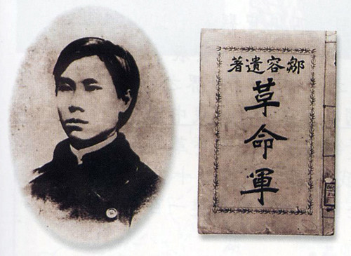

|
邹容爱国诗选 |
|  |
| 邹容及其所著《革命军》 |
邹容（1885——1905），今重庆渝中人，辛亥革命先驱。17岁赴日留学，接受西方资产阶级革命 “天赋人权”“自由平等”的学说，积极参加留日学生爱国运动。1903年4月回上海，结识章炳麟（近代民主革命家、思想家、语言文学家）。5月，为团结全国学生，发起组织中国学生同盟会。在此期间，以“革命军中马前卒”为署名发表《革命军》，由章炳麟作序。7月，《苏报》因发表章炳麟的《序<革命军>》而被清政府查封，章炳麟同时被捕。邹容为声援章炳麟，主动投狱，与友人共患难。1905年4月，邹容在狱中被折磨致死，年仅20岁。 邹容的《革命军》，鲜明提出了推翻封建专制，建立中华共和国的号召，为腐朽的清王朝敲响了丧钟，是反清革命史上一篇重要的战斗檄文。1912年，南京临时政府成立后，经临时大总统孙中山批示：邹容“照陆军大将军阵亡例赐恤”。 除《革命军》外，邹容短暂的一生留下来的诗文并不多，以下节选其两首爱国古体诗，供大家欣赏。
邹容 我兄章枚叔，忧国心如焚。 并世无知己，吾生苦不文。 一朝沦地狱，何日扫妖氛！ 昨夜梦和尔，同兴革命军。 （选自《复报》第5期，1906年9月）
注释：邹容和章炳麟双双入狱后，章炳麟写下了署名“西狩”的《狱中赠邹容》：“邹容吾小弟，被发下瀛洲。快剪刀除辫，干牛肉作糇。英雄一入狱，天地亦悲秋。临命须掺手，乾坤只两头。”邹容遂写下《狱中答西狩》这首诗作为回赠。此诗叙述了自己和章炳麟手足般的情谊，也表达了被关进监狱不能反抗清廷统治的无奈，以及希望和章炳麟一道“同兴革命军”的梦想。全诗感情强烈，爱憎分明，表达了作者顽强的革命斗志和激烈的革命情怀。
绝命词（二首其二） 邹容 章炳麟 平生御寇御风志（邹），近死之心不复阳（章）。 愿力能生千猛士（邹），补牢未必恨亡羊（章）。 （选自《汉帜》第2期，1907年2月）
注释：这首诗是邹容和章炳麟在狱中写的联句诗，表达了二人高远的志向、舍生忘死的决心，以及竭尽全力改造社会以使国家富强的愿望。 |